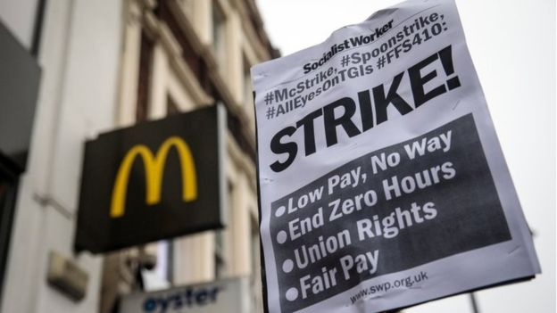

罢工！ | 低工资，没门 | 不做临时工 | 工会权利 | 合理工资
图片来源：bbc.com
上个月，美国众议院通过美国最低工资提高到每小时15美元的《提高工资法》，这是无数美国工人多年斗争的见证。
在美国的“最低时薪15美元”运动中，快餐业工人最为活跃，他们取得的成果也鼓舞了英国快餐业工人。几年来，英国快餐业工人也勇敢站出来抗议不公不义的生活，提出最低“时薪10英镑”的口号。
我们知道快餐业工人很大一部分都是女工，可这都2019年了，英国麦当劳工人还在遭受着性骚扰，而那些罪犯员工没有被麦当劳公司开除，顶多换到其他门店，继续上班。
在英国麦当劳，很多管理人员经常开性玩笑，公开讨论自己的性欲。不仅如此，麦当劳的管理人员还利用职务之便获取员工的电话号码，给她们发短信或者露骨照片。更有甚者，有些管理人员会说可以提供更好工作时段或者晋升机会，只要用性来交换。
所有工人都联合起来
图片来源：astfoodrights.wordpress.com
英国食品业工人工会是英国最大食品行业的独立工会，该工会的各地分支机构向工会报告了很多性侵与性骚扰的详情。工会主席伊恩·霍德森介绍说，有关性侵和性骚扰投诉非常多，还有工人因为投诉而被报复。只有少部分工人因为签了保密协议，才获得补偿。
英国麦当劳发言人建议：那些被性骚扰的员工可以去找他们的经理，也可以拨打员工求助热线，公司会“立即调查”。
但工会发言人说：“在英国麦当劳性骚扰非常普遍，而性骚扰犯却逍遥法外。这是一种有毒的文化。我不是说每一个麦当劳门店都有性骚扰和性侵，但管理层有人性骚扰员工，在有些门店都成普遍现象了，麦当劳却什么也没做，没有去解决这个问题。”
“工人依靠出卖自己的时间来活命，而那些管理人员掌握权力。工人出来打工，就会变成权力的猎物。权力的不平等，使得员工和管理人员地位悬殊。当工人提出投诉，经理不会按照公司章程来进行处理，往往敷衍了事。我们已经听过多次指控性骚扰的案例就这样被糊弄过去了。”
根据工会在全英国的调查，英国麦当劳有1000多名女工遭遇性骚扰。
“很少有麦当劳工人对性骚扰提出申诉，不是因为他们没有被性骚扰，而是因为他们不知道申诉程序。对于许多工人来说，让人知道被性骚扰并不是什么光彩的事，而且就算去申诉，谁会相信他们呢？”
很多时候，那些性骚扰的受害者害怕被报复或者穿小鞋而不敢去投诉，而且很多加害者都是经理的朋友。性骚扰受害者担心在工作场所被孤立，他们不敢去举报，只能在工作时让自己尽量那些罪犯远一些，让工友多看着点自己。
苏格兰格拉斯哥快餐工人在罢工
图片来源：fastfoodrights.wordpress.com
其实早在2017年9月，工会就组织了英国历史上第一次麦当劳工人罢工，要求最低时薪10英镑，并保证工作时间，承认工会的地位。
一位来自伦敦的麦当劳女工说，她在一家麦当劳门店工作多年。在那里，她遭受到一位高级员工的性骚扰。
她说：“那个经理总是有事没事地骚扰我，比如他妻子不在家，他就问我是不是要一起开心一下。在工作的时候，他都会跟我说这种话。不知道从公司那里，还是其他同事那里，他搞到了我的号码，给我发短信说，只有他和孩子在家。我就把他的号码拉黑了。没想到，储存室没有监控，他直接把裤子脱了，拿着自己的生殖器问我：‘这个大不大？’
“在我投诉之后，另一位经理说我最好能证明我投诉里说的内容。如果我这样投诉她，她会拼了命告我是诽谤。”
女工妈妈们的孩子也加入到抗议队伍
图片来源：bbc.com
在数月里，这位女工曾经多次向同事和管理层寻求帮助，但都没有得到帮助，她只能自己应付。
最后，她给麦当劳的人力资源部门写了一封正式的投诉信。几个月后，麦当劳展开了一个应付了事的“调查”。调查开始后，她要和那位实施性骚扰的经理继续一起工作。
没过多久，她在工作中过于害怕被报复，生了病，被送进了医院。到现在为止，这位女工都没有办法重新工作。
图片来源：mcstrike.raisely.com
这位女工说：“我希望麦当劳和我的经理们倾听一下我们的声音，我们需要反骚扰政策。如果你多给了客人番茄酱或者餐纸，麦当劳会考核你，但要他们解决骚扰问题简直是做梦。遭受性骚扰的妇女的数量那么多，我们都无法想象。“
“仅仅就我知道的，就有20到30起性骚扰事件。后来，我就知道了，这是套路。因为只有管理人员知道哪里有监控，哪里没有监控，但那些新进的员工不知道。比如在厕所或者储存室。如果那些被性骚扰的人反击，她们最后要不被警告，要不被开除。想一下，如果这发生在你的儿子或者女儿身上，该怎么办？”
岂止性骚扰问题严重，英国麦当劳工人还面临着只能做临时工的窘境，他们很多人只能拿着低薪，住在狭小的出租屋里。
目前，工会正在为麦当劳工人筹款，准备罢工。低薪、临时工、不安全的工作环境，麦当劳工人不干了。
- original title：More than 1,000 reports of sexual abuse and harassment at UK McDonald’s, campaigners say
- original link：https://www.independent.co.uk/news/uk/home-news/mcdonalds-sexual-harassment-protests-abuse-workers-a8937186.html
- link: https://www.jianjiaobuluo.com/content/107051
- author：Maya Oppenheim，translator：王小嗨